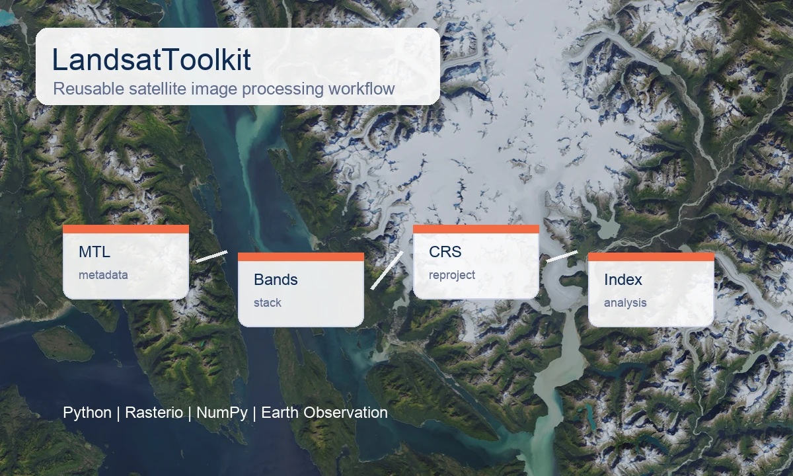
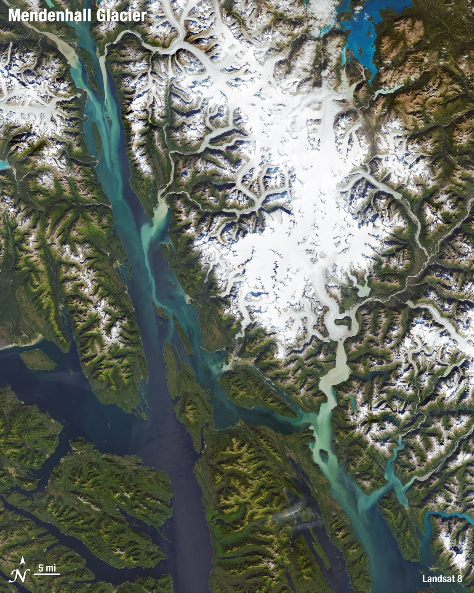
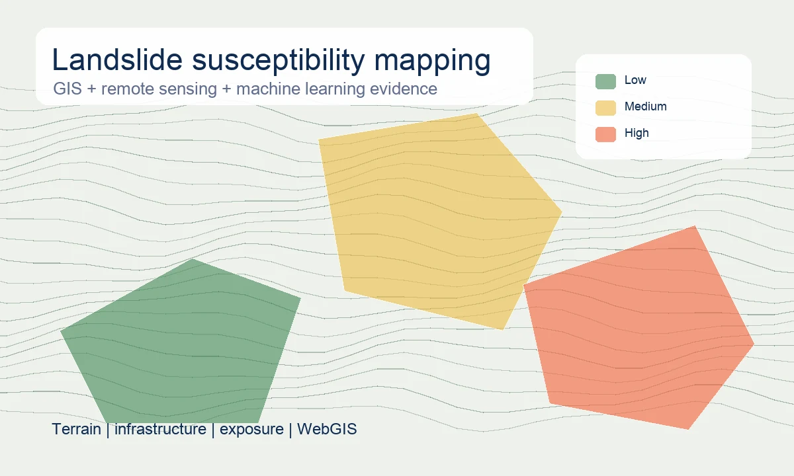
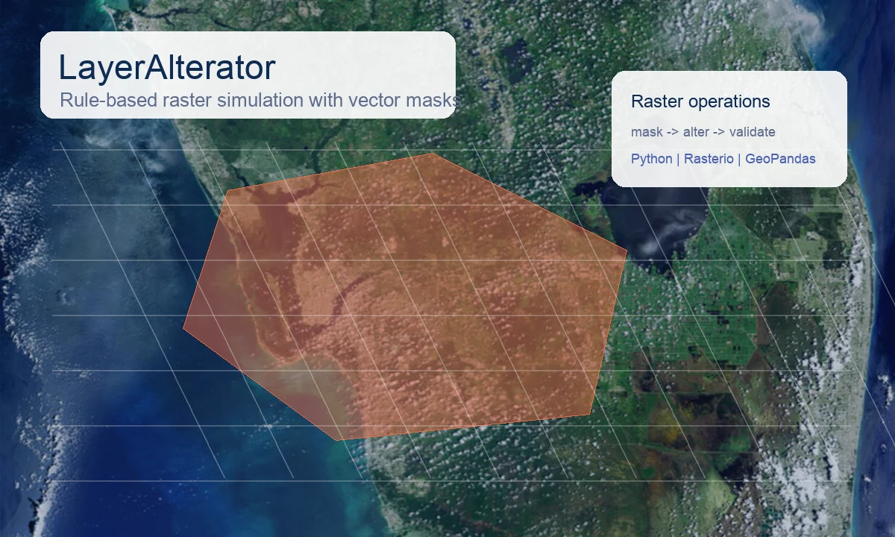
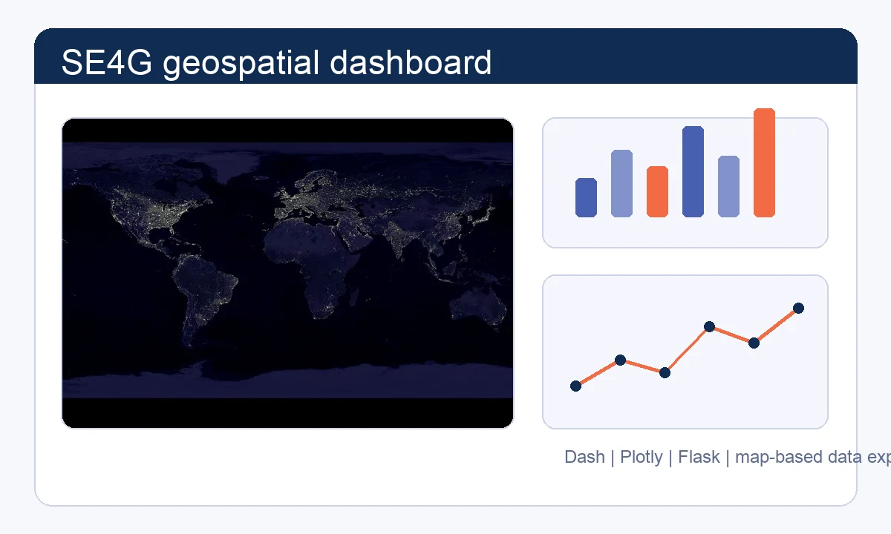
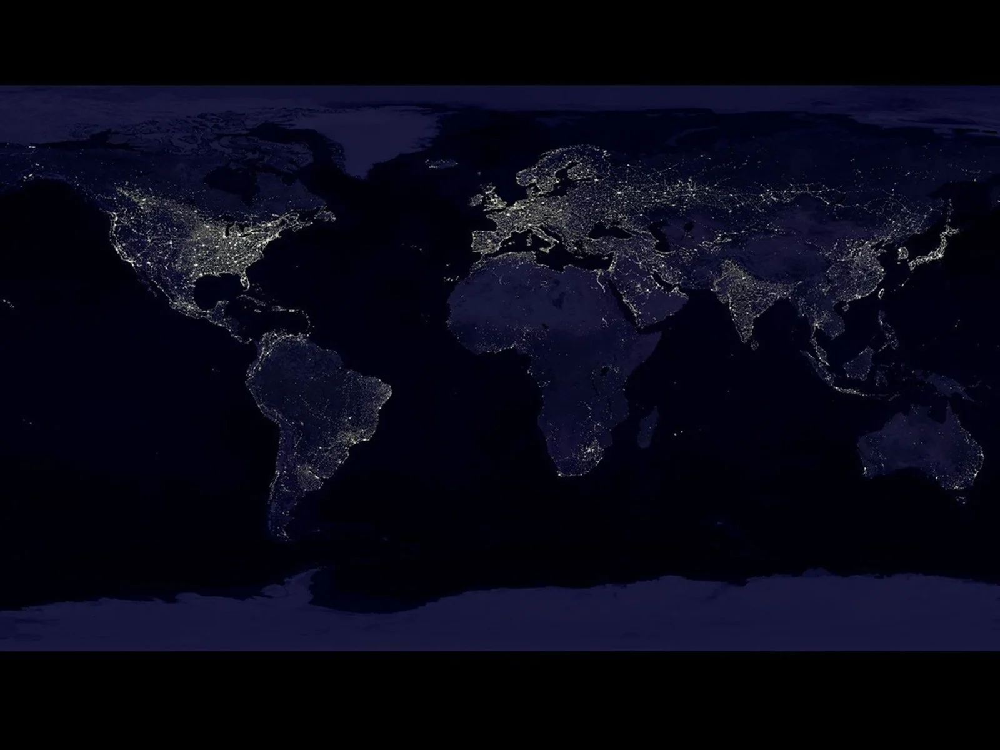

ML and geoinformatics
Inferring Map Generalization Operations from User Prompts
Machine-learning workflow linking user prompts to cartographic generalization operations.
- Python
- Scikit-learn
- GeoPandas
Software, data and geospatial systems portfolio
I am Amirhossein Donyadidegan, a geoinformatics engineer who combines geographic knowledge with informatics and software engineering.
My work focuses on Python-driven workflows, remote sensing and GIS, dashboards, data products, and structured portfolio evidence across machine learning, data processing, WebGIS, web development, and spatial analysis.


Projects
Each project is framed around the role signal it gives recruiters: engineering, analysis, research, interface work, or applied data science.
ML and geoinformatics
Machine-learning workflow linking user prompts to cartographic generalization operations.


Remote sensing toolkit
Reusable Python toolkit for metadata handling, band operations, reprojection, and index workflows.

WebGIS and spatial ML
GIS and machine-learning workflow using terrain, infrastructure, and remote sensing evidence.

Raster processing
Python tool for controlled raster modification with masks, validation, and reusable processing logic.

Dashboard
Interactive dashboard combining maps, charts, API integration, and user-driven data inspection.
Web development
Responsive platform contribution with frontend, UX, database-backed features, profiles, and dynamic content.
Experience
I turn datasets into analysis-ready layers, model features, dashboards, and documented Python workflows. My experience connects GIS analysis, software engineering habits, data science experiments, web interfaces, and geospatial research support.

Tools: Python, HTML, JavaScript, CSS, dashboards, Git

Technical skills
Grouped from the CV into recruiter-readable clusters, with the strongest fit around Python, geospatial data, machine learning, dashboards, and web interfaces.
SPATIAL / EO
Prepare spatial layers, analyze mobility and energy data, process raster/vector datasets, and communicate results with maps.
Core
Applied
PYTHON / PROCESSING
Build readable scripts, reusable processing steps, Git-based project structure, and documented technical workflows.
Core
Core
MODELS / EVIDENCE
Prepare model features, work with vector embeddings, run evaluation loops, and connect ML experiments to domain questions.
Core
Applied
INTERFACES / DELIVERY
Support HTML, CSS, JavaScript, dashboard views, and interface elements that make technical outputs easier to inspect.
Applied
Support
Support
Support
Process
The same workflow fits GIS analysis, data science experiments, web dashboards, software utilities, and research support.
Clarify the role of the data, the user, the decision, and the technical constraints.
Clean, transform, join, document, and structure datasets for analysis or development.
Develop Python workflows, ML experiments, GIS logic, dashboards, or web interface components.
Check outputs with metrics, spatial reasoning, visual inspection, and reproducible tests where useful.
Package the result as documented code, maps, dashboards, model outputs, or clear project evidence.
Education
A path from surveying foundations to geoinformatics specialization, with exchange and research exposure in Germany.
 Sep 2023 — Mar 2026
Sep 2023 — Mar 2026
Geoinformatics specialization with GIS, machine learning, databases, Earth observation, geospatial data analysis, and geospatial processing.
Thesis: Inferring Map Generalization Operations from User Prompts

University of Bonn Erasmus+ exchange for thesis in geodesy.

Karlsruhe Institute of Technology Erasmus+ exchange for remote sensing and geoinformation courses.
 Sep 2018 — Jul 2022
Sep 2018 — Jul 2022
Foundation in surveying, photogrammetry, remote sensing, GIS, geodesy, and spatial analysis.
Thesis: Application of GIS and Big Data in Smart Cities

Contact
Best fit: teams that need careful data handling, readable code, map-aware analysis, and practical dashboard or web outputs.